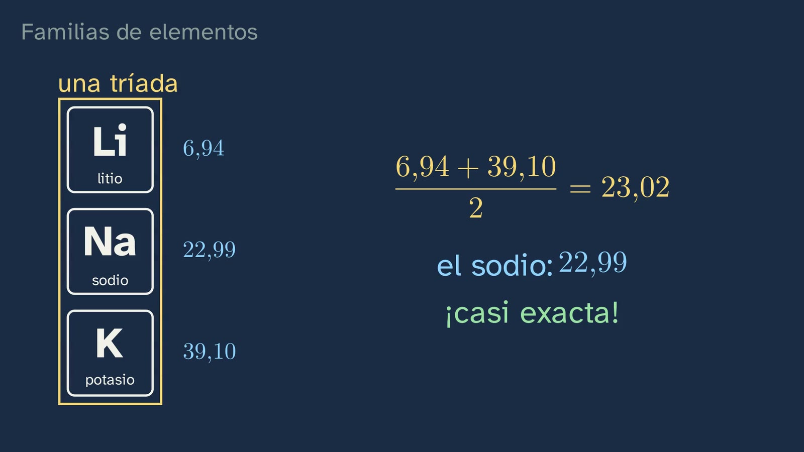
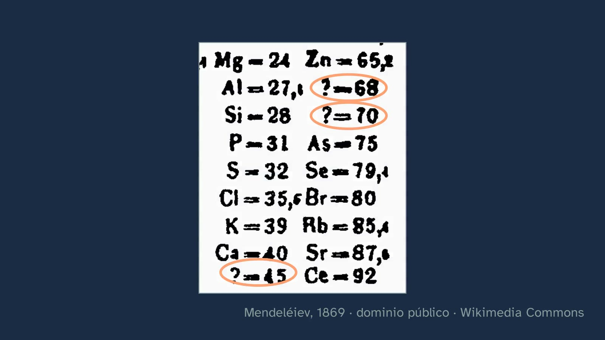

Los huecos de Mendeléiev
En pocas palabras
La clase abre el tema con una pregunta: ¿se puede predecir algo que nadie ha visto nunca? Recorre cómo los químicos del siglo XIX buscaron familias de elementos (las tríadas de Döbereiner, las octavas de Newlands) y se detiene en lo que hizo distinta la tabla de Mendeléiev: dejó huecos y describió lo que faltaba. El alumnado hace la predicción del germanio por su cuenta, la compara con lo que se midió quince años después y ve la tabla original de 1869 con sus huecos. Cierra con dos casos que se miran juntos: el del galio, en el que falló la primera medida y acertó la predicción, y el del teluro, en el que la medida era buena y quien se equivocó fue Mendeléiev al dudar de ella. La lección: ni la teoría ni la medida tienen razón por decreto.
Objetivo. Al terminar, el alumnado sabrá explicar cómo se agruparon los elementos por sus propiedades antes de conocer el átomo, de Döbereiner a Mendeléiev, y por qué predecir el galio y el germanio convirtió la tabla en una herramienta para anticipar propiedades.
Currículo
Real Decreto 243/2022, Física y Química (texto consolidado del BOE, comprobado el 27/09/2026).
| Elemento | Qué dice el decreto | Dónde se trabaja |
|---|---|---|
| Saber básico (bloque A) | «Desarrollo de la tabla periódica: contribuciones históricas a su elaboración actual e importancia como herramienta predictiva de las propiedades de los elementos.» | Toda la clase |
| Competencia específica 2 | «Razonar con solvencia, usando el pensamiento científico y las destrezas relacionadas con el trabajo de la ciencia, para aplicarlos a la observación de la naturaleza y el entorno, a la formulación de preguntas e hipótesis y a la validación de las mismas a través de la experimentación, la indagación y la búsqueda de evidencias.» | La predicción del germanio y los casos del galio y el teluro |
| Criterio 2.1 | «Formular y verificar hipótesis como respuestas a diferentes problemas y observaciones, manejando con soltura el trabajo experimental, la indagación, la búsqueda de evidencias y el razonamiento lógico-matemático.» | Tú, Mendeléiev: la predicción del germanio |
| Criterio 2.2 | «Utilizar diferentes métodos para encontrar la respuesta a una sola cuestión u observación, cotejando los resultados obtenidos y asegurándose así de su coherencia y fiabilidad.» | La medida que falló: la segunda medida del galio |
Lo que hay que traer de la ESO: protones, neutrones y electrones; número atómico; qué es un elemento químico.
Cómo está construida la clase
Capítulos del vídeo: 0:00 Qué vamos a ver · 0:27 La pregunta · 1:10 Lo que ya sabes · 2:00 Familias de elementos · 4:03 Los huecos · 5:14 Tú, Mendeléiev · 6:55 La medida que falló · 9:10 Por qué funcionaba · 10:55 Para practicar y seguir pensando
Unos doce minutos, en nueve capítulos. Sigue las bases formativas del canal: cada idea se predice antes de verse y se prueba con documentos y datos.
| Capítulo | Qué pasa | Por qué así |
|---|---|---|
| Qué vamos a ver | Abril presenta el tema y el mapa de sus seis clases; dos son de laboratorio. | Saber dónde se está y adónde se va ordena lo que se aprende. |
| La pregunta | En 1871 Mendeléiev describe un elemento que nadie ha visto; en 1886 aparece el germanio. | Una historia real con un final sorprendente hace querer saber cómo. |
| Lo que ya sabes | El número atómico, y que Mendeléiev no lo conocía: sólo tenía masas y propiedades. | Recuperar lo sabido y situar el problema con las herramientas de la época. |
| Familias de elementos | El litio, el sodio y el potasio; la tríada de Döbereiner, calculada por el alumnado; las octavas de Newlands y por qué fallaban. | Primero la intuición (el parecido) y después los intentos de ordenarlo, con sus errores. |
| Los huecos | El arsénico no se parece al aluminio: Mendeléiev lo pasa debajo del fósforo y deja dos huecos. La tabla original de 1869. | La idea clave se ve en un caso concreto y se prueba con el documento. |
| Tú, Mendeléiev | El alumnado predice la masa del elemento que falta (la media da 73,4; Mendeléiev escribió 70 en 1869 y 72 en 1871) y compara su ficha con lo que se midió en 1886. La densidad enseña que no bastaba con hacer medias. | Hacerlo uno mismo convierte la anécdota en método, y ver dónde falla la media evita reducirlo a una receta. |
| La medida que falló | El galio: 5,9 predicho, 4,7 medido con 64 mg (mayo de 1876) y 5,94 unos meses después, ese mismo año, con unas nueve veces más metal. Ojo: en el vídeo, «ese mismo año» es 1876, no 1875, el año del descubrimiento; conviene decirlo en clase. La leyenda (que Mendeléiev pidió repetirla) se separa de lo documentado. Y una pregunta abierta: ¿fueron las predicciones lo que convenció a los químicos? | La ciencia coteja; y lo que es discutido se presenta como discutido. |
| Por qué funcionaba | El teluro y el yodo, con el «Te = 128?» de la tabla original, y Moseley (1913–1914): el orden verdadero es el del número atómico. | El error típico, desmontado con la historia que lo explica, y en contraste con el galio. |
| Para practicar y seguir pensando | Recapitulación, tres ejercicios, una pregunta abierta y el anuncio del laboratorio. | Práctica espaciada: las soluciones abren la clase siguiente. |

Plan de una sesión de 50 minutos
| Minutos | Qué se hace |
|---|---|
| 0–5 | Sin vídeo: ¿se puede predecir algo que nadie ha visto nunca? Una respuesta por cabeza, apuntada. |
| 5–11 | Vídeo de 0:00 a 4:03 (hasta «Los huecos»). En el cálculo de la tríada, parar y dejar que lo hagan. |
| 11–41 | La actividad «Juega a ser Mendeléiev», con las tarjetas y la predicción de los dos huecos. |
| 41–50 | Vídeo de 4:03 a 10:55: los huecos de la tabla de 1869, su predicción frente a la del germanio, el galio y el teluro. El último capítulo (10:55 a 12:31, con los ejercicios y la pregunta abierta), en casa, con la hoja. |
Errores típicos y cómo se tratan
- «Mendeléiev ordenó los elementos por su número atómico». No podía: los protones no se conocían. Ordenó por masa, y en algún caso rompió ese orden porque las propiedades lo pedían (el teluro antes que el yodo). Pensó que la masa del teluro estaba mal medida («Te = 128?» en su tabla); no lo estaba. Los trabajos de Moseley con rayos X (1913–1914) mostraron que el orden verdadero es el de la carga del núcleo, el número atómico; que ese número cuenta los protones se entendió después.
- «La tabla periódica la inventó Mendeléiev él solo». La clase enseña a Döbereiner y a Newlands, con sus aciertos y sus límites. Lothar Meyer llegó por su cuenta a una tabla muy parecida (compartieron la medalla Davy en 1882) y también dejó huecos (en 1864, uno tras el silicio, con masa 73), pero no describió cómo serían los elementos que faltaban (Boeck, 2019).
- «Si la medida no coincide con la teoría, la teoría está mal» (o al revés). Con el galio falló la primera medida; con el teluro, la regla de ordenar por masa. Cotejar es parte del método.
- Leer todos los signos de interrogación de la tabla de 1869 como huecos. Algunos marcan dudas de Mendeléiev («Te = 128?», «Au = 197?»). Los huecos son los que llevan el signo en lugar del símbolo: ? = 45, ? = 68, ? = 70 y ? = 180.

Preguntas y soluciones
Para y piensa (dentro del vídeo)
- ¿Qué tienen en común todos los átomos de un mismo elemento? El mismo número de protones, su número atómico.
- Con el litio (6,94) y el potasio (39,10), ¿cuánto tendrá el sodio? La media es 23,02; el sodio tiene 22,99.
- Entre el silicio (28,09) y el estaño (118,71), ¿cuánto pesará el elemento que falta? La media da 73,4; Mendeléiev dijo 72; el germanio tiene 72,63. ¿Y cómo será? (lo pregunta la hoja) Mendeléiev predijo en 1871 un metal gris oscuro de densidad 5,5 g/cm³, con un óxido EO₂ de densidad 4,7 y un cloruro líquido que hierve por debajo de 100 °C; en 1886 se midió un metal gris de 5,47 g/cm³, un GeO₂ de 4,70 y un GeCl₄ que hierve a 86 °C.
- La primera medida del galio dio 4,7 y la predicción era 5,9: ¿quién se equivocó? La medida, hecha con 64 mg; repetida, dio 5,94.
- ¿Por qué dejar huecos era más valiente que apretar los elementos conocidos? Porque un hueco es una predicción que se puede comprobar y que puede fallar.
Para practicar (las soluciones abren la clase 2)
- La tríada del calcio (40,08), el estroncio (87,62) y el bario (137,33). La media del calcio y el bario es 88,71: el estroncio se desvía un 1,2 %.
- La masa del bromo, con la del cloro (35,45) y la del yodo (126,90). La media es 81,18; el bromo tiene 79,90 (un 1,6 % menos).
- El cobalto pesa 58,93 y el níquel 58,69, pero en la tabla de hoy el cobalto va delante: ¿por qué? Porque la tabla se ordena por número atómico, no por masa: el cobalto es el 27 y el níquel, el 28. Es el mismo caso que el teluro y el yodo (en la tabla de 1869, además, los dos comparten casilla: «Ni = Co = 59»).

Para seguir pensando. Si una teoría acierta una predicción arriesgada, ¿sabemos ya que es verdadera? ¿Y si falla una sola vez? No tiene respuesta de libro, y la clase la deja abierta. Da para contrastar dos posturas con su mejor argumento: la de Karl Popper, para quien lo que hace científica a una teoría es que se pueda refutar, y una predicción fallida, si se confirma el fallo, la refuta (Logik der Forschung, 1934; en español, La lógica de la investigación científica); y la de Pierre Duhem, que observó que una predicción nunca pone a prueba una teoría sola, sino junto con la medida y otros supuestos, de modo que un fallo no dice por sí solo cuál de ellos falla (La théorie physique, 1906; lo retomaron Quine y Lakatos). La propia clase ofrece los dos casos: con el galio, Mendeléiev tenía razón frente a la primera medida; con el teluro, la medida era buena y lo que fallaba era la regla de ordenar por masa.
Para el profesorado: si fueron las predicciones las que convencieron a los químicos es una cuestión que los historiadores discuten. Lo han estudiado, entre otros, Brush (1996, Isis 87, 595–628, doi:10.1086/357649) y Scerri y Worrall (2001, Studies in History and Philosophy of Science 32), que comparan el peso de las predicciones con el de encajar bien lo ya conocido. La clase lo presenta como discutido, con un dato: en 1882, antes del germanio, la medalla Davy premió a la vez a Mendeléiev y a Lothar Meyer, que había dejado huecos en su tabla sin describir lo que faltaba.
Una actividad para el aula
Juega a ser Mendeléiev (30–40 minutos, en grupos de tres o cuatro).
- Cada grupo recibe, desordenadas, dieciocho tarjetas con la masa atómica, la fórmula del óxido y si es metal, semimetal o no metal, de estos elementos (masas de la CIAAW): Li 6,94 (Li₂O, metal); Be 9,01 (BeO, metal); B 10,81 (B₂O₃, semimetal); C 12,01 (CO₂, no metal); N 14,01 (N₂O₅, no metal); Na 22,99 (Na₂O, metal); Mg 24,31 (MgO, metal); Al 26,98 (Al₂O₃, metal); Si 28,09 (SiO₂, semimetal); P 30,97 (P₂O₅, no metal); K 39,10 (K₂O, metal); Ca 40,08 (CaO, metal); As 74,92 (As₂O₅, semimetal); Rb 85,47 (Rb₂O, metal); Sr 87,62 (SrO, metal); In 114,82 (In₂O₃, metal); Sn 118,71 (SnO₂, metal); Sb 121,76 (Sb₂O₅, semimetal).
- Consigna: ordenadlas por masa en filas de cinco, de modo que en cada columna queden elementos con el mismo tipo de óxido. Para simplificar, se han quitado el hidrógeno, los metales de transición y las familias del oxígeno y de los halógenos (los gases nobles aún no se conocían): conviene decirlo.
- Al llegar al arsénico, la fila no cuadra: por masa caería debajo del aluminio, pero su óxido (As₂O₅) es como el del fósforo. Los grupos que dejen dos huecos han hecho lo que hizo Mendeléiev.
- Predicción (CE2): masa y óxido de los dos elementos que faltan. Con las medias de sus vecinos: 70,9 y X₂O₃ para el de la columna del aluminio (el galio tiene 69,72 y forma Ga₂O₃), y 73,4 y XO₂ para el de la del silicio (el germanio tiene 72,63 y forma GeO₂).
- Puesta en común (CE2, criterio 2.2): ¿qué grupo se acercó más? ¿Por qué la media funciona mejor con la masa que con otras propiedades? (Con la densidad falla: la media del silicio y el estaño da 4,81 g/cm³, y la del germanio es 5,32 según las medidas de hoy; Winkler midió 5,47 en 1886, el valor que enseña el vídeo.)
Para el profesorado: la clase 2 es de laboratorio (el ensayo a la llama). Si se hace en el aula, conviene el método de las astillas de madera de la Royal Society of Chemistry, que evita el ácido clorhídrico concentrado del método del hilo.

Fuentes
- Real Decreto 243/2022, texto consolidado (BOE): https://www.boe.es/buscar/act.php?id=BOE-A-2022-5521.
- Royal Society of Chemistry, historia de la tabla periódica: https://periodic-table.rsc.org/history/about.
- Textos originales, en Classic Chemistry (Le Moyne College): Döbereiner (1829), https://web.lemoyne.edu/giunta/dobereiner.html; Newlands (1865–1866), https://web.lemoyne.edu/giunta/ea/newlandsann.html; Mendeléiev (1869), https://web.lemoyne.edu/giunta/ea/mendeleevann.html.
- La predicción del germanio frente a lo medido en 1886, densidades incluidas: Bates College, https://abacus.bates.edu/acad/depts/biobook/Eka-Si.pdf; la masa atómica de Winkler: Weinert (2020), Bulletin for the History of Chemistry 45(1), https://acshist.scs.illinois.edu/awards/OPA%20Papers/2022-Weinert.pdf.
- La densidad del germanio hoy, 5,32 g/cm³: Royal Society of Chemistry, https://periodic-table.rsc.org/element/32/germanium.
- La densidad del galio, con las citas originales de Lecoq de Boisbaudran: Sztejnberg (2022), Revista CENIC, https://www.redalyc.org/journal/1816/181676110008/html/.
- Moseley, H. G. J. (1913). The high-frequency spectra of the elements. Philosophical Magazine, 26, 1024–1034, doi:10.1080/14786441308635052.
- El debate sobre las predicciones: Scerri, E. y Worrall, J. (2001). Prediction and the periodic table. Studies in History and Philosophy of Science, 32(3), 407–452.
- Lothar Meyer y sus huecos de 1864: Boeck, G. (2019). Julius Lothar (von) Meyer (1830–1895) and the Periodic System. Substantia, 3(2), supl. 4, 13–25, doi:10.13128/Substantia-503.
- Brush, S. G. (1996). The reception of Mendeleev's periodic law in America and Britain. Isis, 87(4), 595–628, doi:10.1086/357649.
- Masas atómicas estándar: CIAAW (IUPAC), https://www.ciaaw.org/abridged-atomic-weights.htm.
- La tabla de Mendeléiev de 1869 (dominio público): Wikimedia Commons, https://commons.wikimedia.org/wiki/File:Periyodik_Tablo_1_Mart_1869.jpg.

Sobre esta clase
GinCol Lab es un canal gratuito de ciencia para curiosos. Abril es un personaje ilustrado con voz sintética, creada por ordenador, que no imita a ninguna persona conocida; el guion y esta ficha los escribe una IA (Claude, de Anthropic) y los revisa una persona antes de publicarse. Si ves un error, dínoslo: aprender también es corregir.
Esta ficha se publica con licencia Creative Commons Reconocimiento 4.0: puedes copiarla, adaptarla y usarla en tu aula citando a GinCol Lab.
Cómo citar esta ficha
GinCol Lab (2026). Los huecos de Mendeléiev. Ficha docente de GinCol Lab: Física y Química · 1.º de Bachillerato · El átomo y la tabla periódica · Clase 1 de 6. https://gincollab.github.io/aula/fisica-y-quimica/t01-c1/. CC BY 4.0.
Ficha docente de GinCol Lab · CC BY 4.0 · Código fuente y erratas